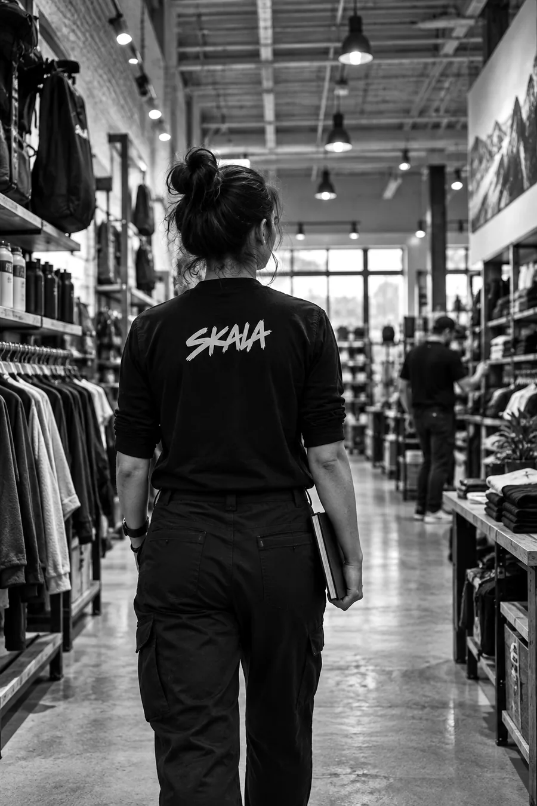

What we build
An operating assessment, a prioritized build plan, and clear ownership for the work.
Operating capability for multiunit retail
You have a growth move in mind. We help build the systems and teams to make it work, before the next location or major expansion puts the operation under pressure.
Led by Tavis Scholz. Built from operating experience.

People. Systems. Momentum. Impact.
Good operators deserve better systems.
Your operation has its own weak spots. We work with you to find them and build something the team can actually use.
What we build
An operating assessment, a prioritized build plan, and clear ownership for the work.
What we build
Practical standards, operating routines, scorecards, and field-support tools.
What we build
Role expectations, onboarding, manager training, and coaching routines.
What we build
Opening responsibilities, development milestones, and support planning for corporate or franchise growth.

Good brands scale real lives.
How we work
We start where the operation happens. The work is finished when people can use it, own it, and keep improving it.

Get into the operation and identify what is slowing people down.
Turn the important work into clear standards and usable tools.
Help managers and teams put those tools into practice.
Establish ownership and a rhythm for reviewing the work.
Carry what works into the next store, team, or growth move.
A useful operating rhythm makes ownership visible.
Illustrative working tool
| Work | Owner | Next step | Status |
|---|---|---|---|
| Opening checklist | Development lead | Walk the checklist on a live opening day | |
| Manager onboarding | Field leader | Run the first two weeks with a new manager | |
| Weekly store review | Store manager | Review last week and set three priorities |
A simple example of the tools we build around the way a business works.
Field notes
Practical notes on building a business that can keep moving.
Operator experience
Tavis has led multiunit retail operations and field teams. His work has included franchise standards and training, field support, real estate, and store development.
SKALA brings that experience to brands preparing for their next stage of growth. The work starts with how the business operates today and stays close to the people responsible for making it better.
Defined projects. Fractional operating leadership. Interim leadership.

Tell us what you are building and where the operation needs to get stronger.
Website preview — this form prepares a draft and does not send it.
Your inquiry